H2CE：面向本地搜索的异构两阶段交叉编码器
论文标题： H2CE: Modeling Geo-Semantic Interactions for POI Reranking with Heterogeneous Two-Stage Cross-Encoders
中文译名： 用异构两阶段交叉编码器建模地理与语义交互的 POI 重排
作者： Zhengwei Bai、Moreno D’Incà、Danielle Class、Alessandro Moschitti
机构： Amazon；Moreno D’Incà 署名 University of Trento，工作完成于 Amazon 实习期间。
公开日期与版本： 2026-10-08，arXiv v1；论文首页自报 CIKM ’26，会议日期为未来的 2026-11-07 至 11 日，本轮未独立核验正式会议收录。
论文入口： arXiv 2610.11277
代码状态： 本轮未核验到独立实现仓库；论文使用公开 BGE-reranker-large，专有评测集不公开，POISS 是作者宣称的可比开放替代，并非本文同一评测集。
阅读口径： 全文 12 页，包括披露与参考文献；下述结果均为作者报告，未自行复现。
同样是在附近找餐厅，“最近”“最好”“真正的意大利菜”要求排序器使用不同的证据。H2CE 把这个差异落实为两个可训练机制：让文本编码器接触带意义的数值描述，同时保留精确数值；先独立评分，再只对最有希望的候选进行直接比较。它关注的是搜索链路的重排环节，不能被理解为一种新的全库召回或个性化序列推荐模型。
一家餐厅更近，却只部分满足菜系要求；另一家更远，却更符合意图、评分更可靠。距离、评分与评论量应怎样随查询含义改变权重，又怎样在实时预算里直接比较多个合理候选？
1. 背景和问题
本地搜索的结果通常不是单一正确答案。用户说“附近的药店”时，多家店都可能有效，但最近一家通常更合适；用户说“最好的意大利餐厅”时，菜系真实性、评分和评价数量又可能比几百米的差距重要。这个场景与一般文档检索不同：数值属性有直接业务含义，地理位置也不能只作为一个固定惩罚项。论文所讨论的距离是用户位置或者查询中解析出的目标地点到商家的距离，因此“near me”和“near the Eiffel Tower”需要不同的参照点。目标地点解析错误会改变所有后续距离，即使重排器本身正常，最终结果也会不合理。作者把研究范围放在上游已经完成查询理解和候选召回之后，这个边界决定了论文能解决的是既有候选中的取舍，而不是所有本地搜索问题。
既有生产链路往往先判断查询类型，分别调用检索器，再用手工特征、树模型和启发式规则混排。论文举出的历史体系包含 BM25 类文本得分、字符串相似度、地理距离、互动信号、连锁店规则以及若干混合逻辑。这种路线具有成熟的延迟和可解释性优势，但复杂规则容易在意图变化时失效。树模型可以精确利用距离，却只能从浅层文本特征里理解“真实意大利菜”和“包含意大利菜”的区别；语言模型能够理解这些语义，却未必可靠地区分数字所代表的数量级。因此问题不是单独增强某一路，而是让数值的作用受语义控制，也让语义的作用受到数值差距约束。
论文在开篇用一个说明性候选集合具体化了这种矛盾。这个表不是标注数据上的错误率统计，也不是新的案例实验，它用于展示同一条查询中的属性冲突。
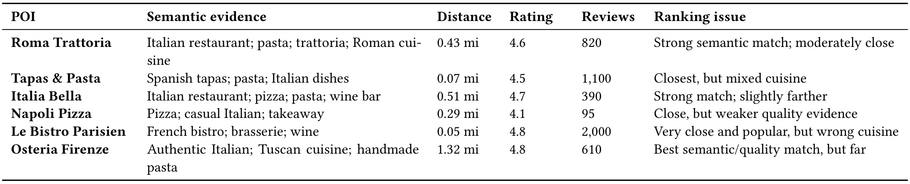
表中查询要求埃菲尔铁塔附近的真实意大利餐厅。Roma Trattoria 的菜系证据较强，距离为零点四三英里，评分四点六，评价八百二十条；Tapas & Pasta 只有零点零七英里，但同时强调西班牙小食与意大利菜。更近并不自动等于更相关，因为后者只部分满足请求。Le Bistro Parisien 更近、评分更高、评价更多，却属于法国餐馆，对指定菜系而言首先存在意图错误；若系统机械叠加距离与评分，这类商家很容易挤占前排。另一端的 Osteria Firenze 拥有很强的意大利菜与质量证据，却远到一点三二英里，让排序器必须考虑用户是否能接受这种额外出行成本。
这张表最值得关注的是“属性之间存在条件关系”。评分和评论量只应在语义基本成立的候选之间发挥质量区分作用；距离的相同变化，在强调步行距离的查询中可能比在追求特色餐厅的查询中更重要。原文并没有给出这个示例唯一的人工正确全排序，因此不能拿它声称模型已经学会符合用户偏好的每一种取舍。它展示的是设计动机：一个全局固定的数值权重会把近、好、相关当作可直接互换的量，却缺少查询意图参与交换的机制。对于推荐排序，这同样提示我们，价格、时效和互动量之类信号的价值常常依赖用户当前请求，而不是在所有请求中保持相同方向和强度。
标准交叉编码器把查询与候选文本放入同一个 Transformer，让两者充分交互，因而比独立编码后求相似度更擅长精细匹配。但若输入只有商家名、类别和地址，它缺少结构化质量信息；若直接追加“零点三英里”“四点七星”“八百二十三条评价”这样的字符串，又要求模型从分词结果里恢复精确大小关系。数值的写法、单位、数量级和训练语料中的共现都会影响其表征，模型不天然拥有可靠的算术比较能力。H2CE 的回应不是要求语言骨干完全承担数值推理，而是把粗粒度概念与精确标量分给两个互补通路，再让最后的网络共同使用。
另一条常见路线是让文本模型输出一个相关分，再给距离、评分、评论量各输出一个分，最后加权相加。这样保留了数值精度，但每一路在融合之前已经被压成标量。文本向量中有关“最近”“可靠”“菜系”的细节可能在压缩时丢失，后面的加权器很难恢复语义与属性之间的非线性关系。作者提出在潜空间融合向量，而非在分数空间简单相加，这是本文的一个核心出发点。需要保持克制的是，足够复杂的树特征或后融合网络也能建模部分交互；论文所比较的是具体给定的五特征树模型与若干神经变体，不能把其结果理解为树模型原则上无法学习条件关系。
还有一种错误发生在多个候选都已相关时。点式分类能够区分意大利餐厅与法国餐厅，但训练时若两个意大利餐厅都标为正例，单独的二元目标没有直接要求它判断谁更值得排第一。评分仍可能从共享表示中间接学到相对质量，但这种信号不够显式。作者称之为正例之间的排序问题：候选本身是否合理与两个合理候选之间谁更优，是不同层次的决策。成对交叉编码器把两家店一起输入，让模型直接看见语义、距离和质量证据的差别，弥补点式评分对竞争者信息的缺失。
但相对比较有成本。候选池达到一百时，逐个独立评分只需一百个样本，完整有向比较则需要九千九百对；如果候选达到数百或上千，成对遍历会快速失去实时可用性。本文因此没有把成对模型覆盖整个检索池，而是通过第一阶段先筛出十个候选。这相当于把额外计算投入决策最敏感的头部位置，以候选准入风险换取延迟上界。论文的研究价值在于把异构表征、头部比较与预算约束联系起来，并通过独立消融检查这几个组成部分。它没有提供在线满意度或者收入提升，因此讨论工程价值应从离线排序与实测组件延迟出发，不能越过证据声称已经改善端到端商业指标。
2. 方法
2.1 异构特征编码：语义概念与精确数值双路
原文第四节首先定义异构特征编码器。输入包含查询、商家名称、类别和街道地址，以及距离、平均评分、评价数量三个数值。语义通路把数值离散成自然语言描述，并将这些描述与原有文本一起送入交叉编码器；数值通路则保留标量精度，分别经过转换器和独立 MLP。 距离可以映射为就在附近、可步行、较近、很远之类概念，评分映射为良好、优秀、出色，评价量映射为有限、充足、丰富。三个字段使用不同的词汇，避免相同描述词对应多个属性而产生含义碰撞。这里的描述词是人为设置的语义钩子，并不代表模型从零学出新的地理尺度；转换器与分桶阈值需要在迁移时重新审查，原文没有完整列出所有阈值。
数值通路分别使用距离转换器、评分转换器和评价量转换器。点式阶段中，每个属性 MLP 接收一家商家的单个值；成对阶段中，每个 MLP 接收两家商家对应属性的值对，例如两者的距离，而不是先人为减成一个差值。这让网络有机会保留绝对位置和相对差距，同时区别很小与很大的差异。每个数值编码器采用带 GELU 的逐步 MLP，输出二百五十六维嵌入。查询语义不会直接输入这些属性编码器，它主要通过文本编码器的表征进入后续融合。因此数值 MLP 本身不是查询条件函数，条件关系是在交叉编码与融合层共同形成的。这种连接方式同时存在于训练和推理中，并不是仅训练时使用的辅助特征。
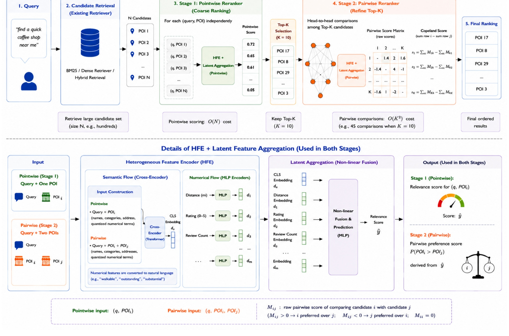
图的上半部分从查询进入既有检索器开始，先得到多家商家，再逐个计算点式相关分，选出头部候选后建立比较矩阵，最后通过 Copeland 聚合得到排序。第一阶段输出的是准入与粗排序，第二阶段输出的是候选之间的胜负偏好；两个阶段承担不同目标，不能把第二阶段视为再次运行同一个点式打分器。图的下半部分展开共享的设计形式：左侧输入在点式场景是查询加一个商家，在成对场景是查询加两个商家；中间蓝色通路把文本与量化描述输入 Transformer，绿色通路把精确属性输入多个 MLP；随后拼接文本 CLS 表征与数值嵌入，由非线性网络给出最终预测。
这张图同时说明数值被使用了两次，但两次承担的作用不同。语义描述让“可步行”与“附近”等查询词发生注意力交互，精确值则让同一分桶内的商家仍然可区分。如果只保留描述词，边界附近的信息会被离散化抹掉；如果只保留标量，语义编码器自身无法感知属性概念。双路设计使两种错误都有补偿来源。图中多属性通路画出了扩展位置，但本文实证使用的是距离、评分与评价量，不能据此声称任意额外特征已被验证。图的比较矩阵使用原始正负分数示意，正文则将比较结果定义为概率；图中十候选示例还提到四十五次比较，而默认全矩阵正文是九十次。两个阶段的训练目标分别面向相关标签和相对序位，图中共用模块形状不代表权重必然绑定。精读时应以正文的概率定义和实验明确区分的全矩阵、半矩阵为准，不把图中的示意值当作真实输出或默认实现。
2.2 潜空间聚合与第一阶段点式评分
原文接下来把文本与数值编码器的输出进行潜空间聚合。每个通路先输出向量，融合之后再预测分数，与先压缩为分数再求加权和的路线不同。文本 CLS 嵌入包含查询与候选的联合语义；三个数值向量提供属性大小与编码后的非线性表征。最终分类器看到这些信息的联合空间，因此能够学习“强调最近且语义已匹配时优先距离”“只部分匹配菜系时不能靠高评分补偿”这类条件关系。这是表征能力层面的解释，是否实际学到某种具体规则仍要通过干预案例检验，整体离线指标不能直接证明每条条件规则成立。
符号解释：$h_{\mathrm{cls}}$ 是文本交叉编码器的 CLS 向量；$z,r,c$ 分别是距离、星级与评论数；$E_d,E_r,E_c$ 是三个数值 MLP，输出各为二百五十六维；分号表示拼接，$E_{\mathrm{cls}}$ 是融合后的预测网络，$s$ 是未过 sigmoid 的点式相关分。原文公式六与七将拼接维度写为文本向量维数加三乘二百五十六。成对阶段保留相同融合形式，但属性编码器的输入换成两家商家的数值对，因此共享的是架构思想，不应擅自认为两个阶段使用完全相同的一组已训练参数。
符号解释：$q$ 是查询，$d_i$ 是候选，$a_i$ 是二元相关标签，$f_\theta$ 是点式打分器，$\sigma$ 是 sigmoid。上式对应原文公式一，训练时对样本求和或平均；推理时按未过 sigmoid 的分数降序排列，与按概率排序等价。正例取自参考标准列表，负例来自列表外候选，因而点式目标主要判断是否满足请求。论文训练每个查询最多使用十六个正例与十六个负例，增加同一意图下的对照密度。第一阶段对所有召回候选存在，第二阶段只在选中的头部存在；若相关商家未进入头部，后面的任何比较都不能把它救回来。这是模型级约束，应在实验中同时查看头部覆盖率，而不能仅用最终重排指标掩盖准入损失。
2.3 第二阶段比较、Copeland 聚合与半矩阵
第二阶段把查询、商家甲、商家乙放入同一交叉编码上下文，并保留两者各自的类别、地址和量化描述，数值通路则分别接收两者的属性对。训练标签从参考排序中产生，越靠前的商家胜过越靠后的商家；成对模型用二元交叉熵学习该偏好。训练时从第一阶段前十名中随机取四家，再构造十二个有向非自比较，这让比较任务集中在已经看起来合理但难以区分的商家上，而不是从全候选集合大量抽到容易辨别的负例。推理时使用前十家所有九十个有向非自比较。训练与推理的候选范围相同，比较样本数量不同，这是原文所谓分布对齐的准确含义。
符号解释：$\rho_i,\rho_j$ 是参考列表中的名次，数值越小越靠前；$y_{ij}$ 是原文公式三的偏好标签；$g_\phi$ 是将甲排在乙前面的概率，损失对应公式四。参考列表由商业搜索提供方生成并经过 LLM 评判验证，所以这里的监督不是原生客观效用，也不是直接来自点击的因果用户偏好。定义使用小于等于，意味着相同名次或不明确偏好如何处理值得实现时复查；论文没有充分展开平局处理与重复商家去重的细节。
符号解释：$M$ 为头部候选的比较矩阵，对角线忽略；$S_i$ 是原文公式五的净偏好强度，排序方向为降序；$K$ 是头部候选数。这是一种连续偏好强度版本的 Copeland 聚合，而不是只按硬胜负计数。它可以在存在噪声和局部循环时给出一个总序，但并不保证逐对关系传递，也不保证输出满足所有成对判断。最后把这段重排后的头部与第一阶段剩余候选连接，尾部保持原顺序。总模型样本数随候选数为线性项加头部二次项；原文的复杂度没有计入输入长度、网络宽度和调度开销，工程实测仍然必要。
半矩阵版本只计算不重复的四十五对，然后用相反方向概率等于一减当前概率进行重建。这个操作依赖概率互补假设，而全矩阵分别计算两个方向，可以容纳模型的顺序敏感与不一致。半矩阵因此不是无条件等价的缓存优化，质量略降是合理代价。部署时应将半矩阵视为另一个经过评估的推理配置，并针对输入顺序交换检查模型偏置；若错误主要由顺序引起，减少比较未必保持论文中的小幅损失。原文的延迟实验提供了这种优化的证据，但没有证明在所有数据分布、所有候选规模和所有硬件上都可以维持相同折中。
3. 实验结果
3.1 数据、指标和主结果
训练数据约为五十万查询及候选商家，监督混合较少的客户标注与较大的 LLM 标注集合。正例来自商业搜索提供方的 Golden Standard List，负例为列表外候选；成对偏好由列表顺序生成。测试采用五千七百四十三查询的组件集合，目的是隔离重排性能与上游路由效果。两阶段使用 BGE-reranker-large，学习率为十的负五次方，训练使用八张四十 GB A100。该设置是专有数据上的组件评测，没有在线实验、置信区间、多随机种子方差，也没有公开同一测试集。因此下述数字是论文内可比结果，跨论文或跨平台直接比较需要另行确认口径。
主要指标 RDQ 衡量相对参考序位的偏离，适合一个查询有多个有效结果但它们仍应按偏好排序的情形；另外报告 NDCG、Precision 与 MRR。它们分别观察位置加权收益、前列有效比例和首个有效答案的位置，不能只选单个最显著数字代表全部质量。论文没有在这里完整重述 RDQ 的定义，而是指向另文，复现实验需要核对真实计算实现。NDCG 的增益也依赖参考列表如何转为相关度，不能默认所有实现一致。
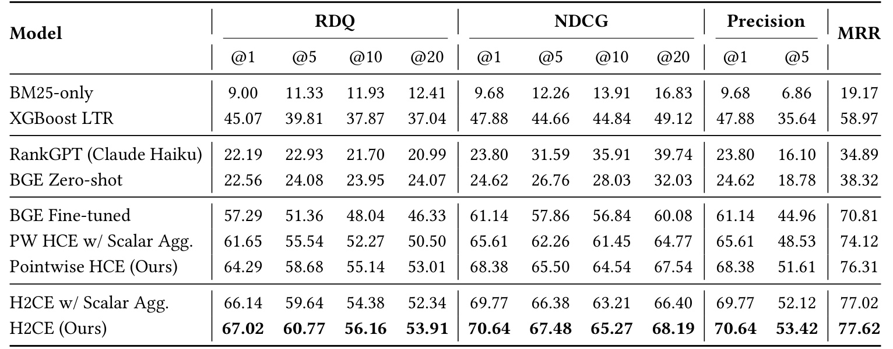
主表行分成词法与树模型、零样本神经模型、领域微调的点式变体以及两阶段系统。列同时报告不同深度的 RDQ、NDCG、Precision 和 MRR，所有数值以百分数展示。完整 H2CE 的 NDCG@5 为百分之六十七点四八，XGBoost 为百分之四十四点六六，零样本 RankGPT 为百分之三十一点五九，因此两个差值分别是绝对提升二十二点八二个百分点与三十五点八九个百分点。把这两个值写成相对提升百分比会夸大或混淆口径。其 RDQ@1 为百分之六十七点零二，Precision@1 为百分之七十点六四，MRR 为百分之七十七点六二，多个头部指标同时改善，支持作者关于组件排序质量提升的判断。
基线的选择也限定了结论强度。XGBoost 使用同一训练查询，但只有距离、BM25、商家名称字符相似度、评论数和评分五个特征，距离重要度约为百分之五十四点九。这是一个实际而有限的结构化基线，不能代表所有现代工业树排序器。RankGPT 使用 Claude 3 Haiku 的零样本滑动窗口排列，窗口二十、步长十，商家字段包含名称、类别、距离、地址、评分和评论量；它不是今天所有 LLM 的最好水平，更不是经过相同领域训练的大模型。完整系统优于这些基线说明领域监督与属性建模在这个测试中有价值，不支持“专用重排器普遍胜过所有大模型”的泛化说法。表中深位指标提升相对较小，也符合第二阶段只改前十名的设计边界。
同一主表里，完整点式模型的 Precision@1 为百分之六十八点三八，完整两阶段达到七十点六四，但 Precision@5 仅从五十一点六一升至五十三点四二。这说明展示第一项与展示五项时的平均有效比例变化不同。MRR 的改善也不能代替列表整体质量，因为它只追踪首个有效答案的位置；解读总收益时应同时保留这些不同观察面。
3.2 构件贡献与数值通路
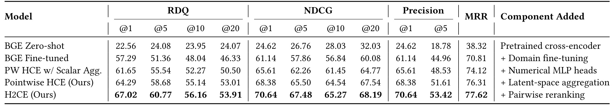
构件表从零样本 BGE 开始，依次加入领域微调、数值特征、潜空间聚合和成对重排。最显著的变化发生在领域适配：RDQ@1 从百分之二十二点五六升至百分之五十七点二九，绝对提高三十四点七三个百分点；这意味着把通用相关性模型直接用于本地搜索会遗漏大量任务特定取舍。随后加入数值通路的标量聚合变体达到百分之六十一点六五，潜空间聚合点式模型达到百分之六十四点二九，完整两阶段达到百分之六十七点零二。沿着这些行可以看见，论文总收益不是全部来自最后的成对模块；大部分提升早在领域训练与第一阶段表征中实现。
这张表提供顺序累积证据，而不是严格正交的因果分解。每一行在前一行之上改变构件，收益会受训练采样与模型交互影响，不能把各行差值当成独立可相加的普适增益。尤其标量聚合点式行与完整点式行在数值上与训练采样消融的单对、多对结果完全相同，而实验设置又明确将完整点式模型与多对训练联系起来。原文将差异归为潜空间聚合，但读者复现时应确认这些变体是否保持相同采样，否则其中部分收益可能被采样策略混杂。这个疑点不抹掉主表表现，但降低了将二点六四个百分点全部解释为融合层单独贡献的把握。
若改看 NDCG@5，零样本到领域微调的变化是二十六点七六到五十七点八六，随后标量融合达到六十二点二六，向量融合点式达到六十五点五零，两阶段达到六十七点四八。指标方向一致，但各阶段幅度与 RDQ 不同。这个对照说明构件增益需要绑定具体指标和深度，不能把 RDQ 第一位的差值搬到 NDCG 第五位。
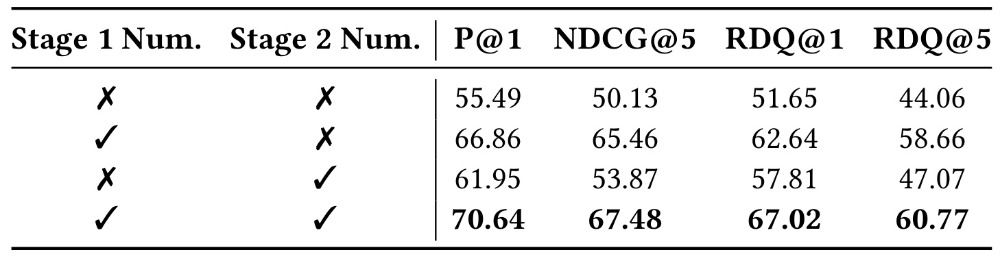
数值消融用两列开关标记点式、成对阶段是否启用数值 MLP，后面四列给出头部准确率与排序指标。两阶段都关闭时 NDCG@5 为百分之五十点一三；只在第一阶段开启变成百分之六十五点四六，只在第二阶段开启为百分之五十三点八七，两个阶段都开启为百分之六十七点四八。RDQ@1 对应为百分之五十一点六五、六十二点六四、五十七点八一和六十七点零二。第一阶段开启的收益明显更大，符合候选准入的作用：一旦低质量筛选把正确商家排到前十之外，第二阶段再准确也无权选择它。
这组实验支持数值通路在粗筛阶段不可缺少，也支持在精比较阶段仍有额外价值。需要读准开关含义：caption 指的是 numerical MLP inputs，不应擅自把关闭数值通路解释为同时删除交叉编码器中的所有分桶描述；论文在这里没有给出完整单独拆分两种数值表征的实验矩阵。因此它不能充分证明描述词与精确值各自贡献多少。对工程迁移最直接的启发是先保证第一阶段看得到结构化属性，再讨论是否值得追加成对网络；如果只能支付一个新模块的预算，这张表倾向于优先投入准入质量，但这种顺序应在自己的候选池和监督分布上重新验证。
两阶段都启用时，Precision@1 为百分之七十点六四；只开第一阶段为六十六点八六，只开第二阶段为六十一点九五。相对只开第一阶段，额外在比较模型中保留标量通路仍提高三点七八个百分点，说明第二阶段并非只需要文本。反过来，只开第二阶段的数值模型也无法达到完整点式准入的水平，支持两个阶段承担不同角色。
3.3 训练采样与成对阶段的增量
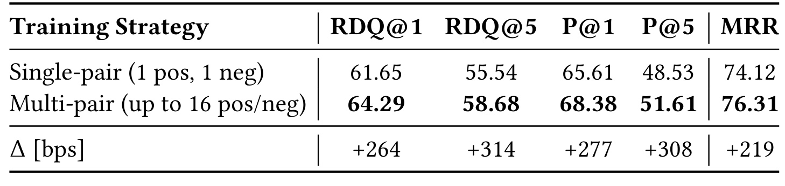
训练消融比较每查询一个正例、一个负例与最多十六个正例、十六个负例。表里的增量使用基点，二百六十四基点等于二点六四个百分点，不是百分之二百六十四。多对训练的 RDQ@1 达到百分之六十四点二九，RDQ@5 达到百分之五十八点六八，Precision@5 达到百分之五十一点六一，MRR 达到百分之七十六点三一；这些值相对单对训练分别提高二点六四、三点一四、三点零八和二点一九个百分点。增益同时出现在多个指标，说明同一查询下更丰富的候选监督对排序有帮助。
作者认为多对训练增加同查询对比并降低梯度方差，但本文并未直接测量梯度方差，因果解释仍属合理假说。采样多样性、有效样本数以及训练计算预算都可能影响结果，复现时应匹配训练步数与每查询采样规则。对于混合 LLM 标签而言，更多样本也不是一定更好：若同一参考列表重复或存在标注歧义，重复训练可能放大其偏好。因而这张表的工程意义不是简单把正负数量拉到最大，而是证明采样策略本身是需要固定和报告的实验变量。若比较模型变体时不控制它，会把采样收益误认成架构收益。
这里没有报告采样数量从二、四、八逐步增加的曲线，因此十六不能被视为最优数量，只是作者实际使用的上限。正例数量少的查询未必能取满十六个，负例难度也会因候选池而异。若要复现，应记录每个查询实际采到多少正负样本，是否重复抽样，以及多对方案是否拥有更多有效训练样本；否则最终差值不容易归因于同查询对比本身。
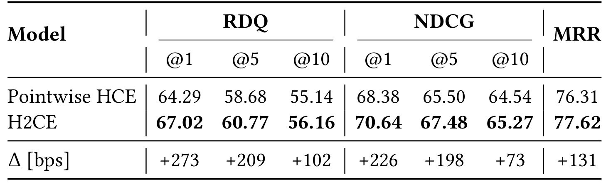
此表使用同一个点式模型作为第一阶段，再增加前十名成对重排。NDCG@5 从百分之六十五点五零提高到百分之六十七点四八，实际额外收益是一点九八个百分点；RDQ@1 提高二点七三个百分点，RDQ@5 提高二点零九个百分点，MRR 提高一点三一个百分点。深度为十的 NDCG 只提高零点七三个百分点，表明主要收益集中在头部的取舍。和主表二十多个百分点的总增益相比，成对阶段的作用更像精修已经不错的排序，不能把全部 H2CE 优势归给这个最后模块。
这些变化与设计动机一致：第一阶段负责有效候选覆盖，第二阶段让多个有效结果直接竞争，从而提高最前面的答案质量。但论文没有单独列出正例之间错误的人工分层统计，因此“收益完全来自正例对比较”仍没有被充分验证；成对网络还可能纠正第一阶段的其他错误。将额外一到两个百分点和新增延迟一起评估，比仅讨论精度更有实践意义。如果业务只展示一项结果，RDQ@1 与 Precision@1 的改善可能更重要；如果产品展示长列表，第二阶段覆盖范围之外的尾部表现也需要检查。最终选型应由展示方式和延迟约束共同决定。
在深度十，RDQ 从百分之五十五点一四到五十六点一六，绝对变化一点零二个百分点，比第一位的二点七三小得多。原文没有给出每查询增益分布，所以无法知道改善来自大多数查询的小变化还是少数困难查询的大翻转。业务若格外关注最差查询，需要额外报告下降查询占比和人工核验，平均指标不能保障所有请求都会获益。这里所有增量均为绝对百分点，不能与另一张半矩阵表的相对百分比并用。
3.4 候选规模与真实单请求延迟
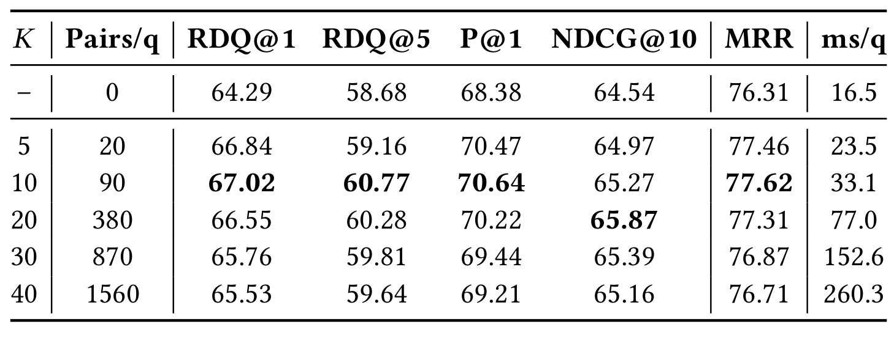
规模表比较不使用成对阶段以及前五、十、二十、三十、四十候选。比较数从零、二十、九十快速增加到三百八十、八百七十、一千五百六十，直接展示头部二次成本。前十时 RDQ@1、Precision@1 与 MRR 在这些设置中最好；前二十使 NDCG@10 略升到百分之六十五点八七，但头部指标退化。前五可能受第一阶段准入限制，前二十及更大规模则偏离训练时前十候选的分布，作者以此解释为何增加比较并没有持续提升质量。这是一个数据支持的趋势，分布错位本身没有被单独控制实验证明。
最容易误读的是最右列。前十对应三十三点一毫秒每查询，来自八张 A100 上批量评测的总墙钟时间除以五千七百四十三条查询，它受并行与批处理影响，表达的是该评测运行的平均摊销时间，不能当作单请求响应延迟。即使前十被选作默认值，也不意味着业务一定应选十，更不意味着系统在单卡、无批处理的实时服务中能三十三毫秒返回。上线时应该使用自己的候选长度分布、硬件、批策略和尾延迟目标重新定范围，同时验证从更大候选池进来的边缘结果是否受到训练分布限制。表中规模越大精度反而下降，提醒我们增加计算不等于稳定增加效用。
此外，前四十时比较数量达到前十的约十七倍，而 RDQ@1 从六十七点零二降到六十五点五三，显示额外计算可能付出了负收益。前二十的 NDCG@10 最高并不意味着所有深度都最佳，因为前十的第一位准确率仍较好。确定候选规模时应先固定展示深度与主目标，再选择配置；若同时追求头部和深位质量，原表只提供折中点，没有统一的最优答案。
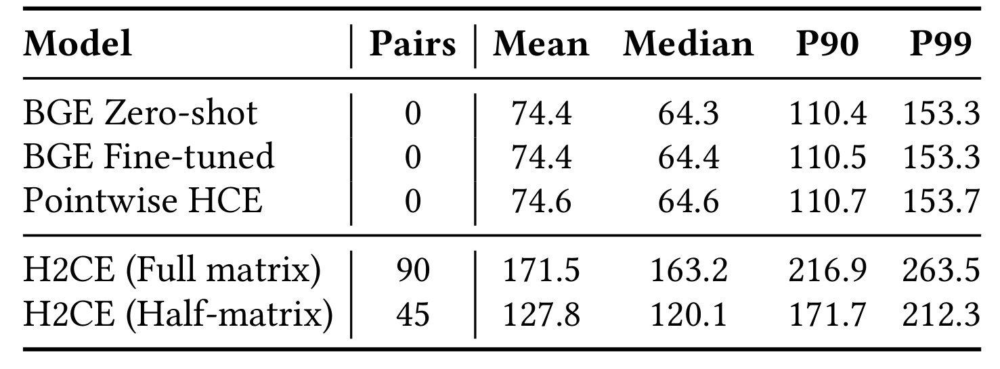
真正的单查询延迟在此表：一张四十 GB A100、batch size 为一，预热十条查询，测量一百条查询。点式 HCE 的中位数为六十四点六毫秒，全矩阵 H2CE 为一百六十三点二毫秒，半矩阵为一百二十点一毫秒；全矩阵的 P90 为二百一十六点九毫秒，P99 为二百六十三点五毫秒。数值 MLP 相对同骨干 BGE 的延迟增加非常小，说明精确属性处理本身不是主要成本，成对交叉编码的新增前向才是开销核心。这个结果支持先增强点式表征是一种较低延迟代价的选择。
这张表给出的边界比“延迟可控”更具体。半矩阵虽比全矩阵快，仍比点式中位数多约五十五毫秒；在紧张的实时链路中，这个差距可能决定能否使用第二阶段。论文只测一百条查询，P99 的稳定性有限，也没有给出并发负载、候选长度分布、请求排队、网络和上游检索的端到端时延。因此不能把这些组件分位数直接作为生产服务 SLA。它和前表的批量摊销时间量纲都叫毫秒，但测量对象不同，在日报与设计评审中必须并列说明口径。用三十三点一毫秒替代一百六十三点二毫秒会严重低估真实单请求预算。
均值也值得一起看：点式为七十四点六毫秒，全矩阵为一百七十一点五毫秒，半矩阵为一百二十七点八毫秒，均高于各自中位数，说明请求分布存在较慢的部分。半矩阵的 P99 为二百一十二点三毫秒，虽优于全矩阵仍明显高于点式的一百五十三点七。若系统预算要求几乎所有请求都快速返回，仅按中位数选择模型会忽略这段尾部开销。也没有说明测量请求是否覆盖最大候选长度，因此这些分位数的适用范围限于作者选择的样本。
3.5 半矩阵质量代价与吞吐估算
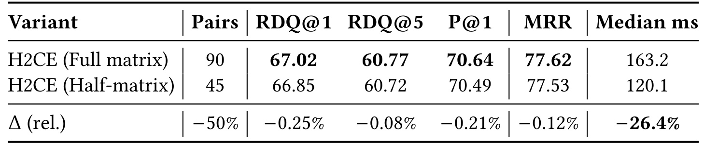
全矩阵每查询九十个有向比较，半矩阵只计算四十五个无向比较并补齐反方向。半矩阵的 RDQ@1 从百分之六十七点零二变为六十六点八五，RDQ@5 从六十点七七变为六十点七二，Precision@1 从七十点六四变为七十点四九，MRR 从七十七点六二变为七十七点五三。质量变化均很小，但并非完全无损。最后一行明确写的是相对变化，例如 RDQ@1 的负百分之零点二五，是相对原值下降而不是下降零点二五个百分点；原始绝对差是零点一七个百分点。这种区分同样适用于前面主表的绝对提升。
中位延迟从一百六十三点二毫秒降至一百二十点一毫秒，相对减少约百分之二十六点四，而比较数减少百分之五十。两者不成比例是因为第一阶段和其他固定开销仍然存在，不能按比较数直接推导总延迟。结果支持在本文配置下用较小质量损失换取明显响应时间改善，但没有报告成对概率互补误差的分布。更完整的诊断可以同时看反方向预测不一致、错误循环和语义接近商家的排序交换。若未来将此配置用于具有更多平局或标签噪声的任务，概率互补假设的代价可能变化，不宜仅复用四十五对这个数字。
从绝对数看，半矩阵的 Precision@1 下降零点一五个百分点，MRR 下降零点零九个百分点；这些损失在当前表上小，但论文没有给出误差条，无法判断其跨重复运行的稳定性。若半矩阵被作为正式服务配置，还应固定候选排序及商家甲乙输入规则，因为重建反方向后不再有第二次独立评估来抵消顺序偏置。该表未报告 NDCG，不能从这些质量列推导半矩阵对应的 NDCG 损失。
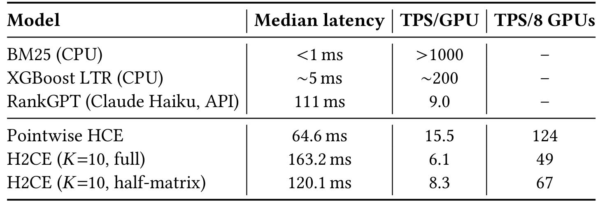
吞吐表通过中位延迟的倒数估算每卡每秒查询数：点式约十五点五，全矩阵约六点一，半矩阵约八点三；八卡数字再按线性相乘得到一百二十四、四十九和六十七。这些是基于组件延迟的推估，不能写成实际压测得到的节点吞吐。 中位数倒数忽略了请求长度变化、批处理收益、调度等待、GPU 利用率和并发资源竞争；八卡线性放大还要求工作均衡且没有其他瓶颈。若读者把六十七当作已实测的生产节点 QPS，会越过原文证据。
表中还列出 CPU 上的 BM25 与 XGBoost，以及使用 API 的 Claude Haiku RankGPT，其硬件和调用方式与本地 GPU 模型不同。这些行用于量级参考，不构成完全同硬件同负载的效率竞赛。尤其 API 延迟会包含远程服务条件，而本地中位数未覆盖完整线上链路。论文证明的是专用神经组件存在可测量的质量与计算折中；决定部署之前仍需固定候选数、输入长度、batch、并发与内存，分别测量吞吐和尾延迟。在没有这样测量之前，应把这张表作为容量规划的初步下界或启发，不能据此承诺商业服务的可用容量。
按同样公式，六十四点六毫秒对应每秒约十五点四八条查询，四舍五入才得到十五点五；一百六十三点二毫秒对应约六点一三，并非恰好六条。这个倒数计算把所有请求都当作中位样本，实际时间分布越偏斜，它和长期完成速率的差距可能越大。节点数字也不包括检索、地点解析和跨卡队列分配，故不能直接拿来计算整个搜索系统需要多少机器。这也是为什么容量规划还需要在固定并发与真实请求分布下测长期完成率，而不是单独取中位时间的倒数。
4. 总结
H2CE 的价值在于把本地搜索的两类难题拆成可以相互配合的模块。一个难题是异构信号的表达：自然语言意图决定距离、评分和评论量如何起作用，精确标量又决定差异是否足以改变取舍。另一个难题是预算内的相对决策：点式模型擅长快速筛选，但几个都合理的商家之间仍然需要比较。双路表征与头部成对网络分别回应这两个问题，实验中的数值消融和成对增量也对应了这条逻辑。我的判断是，最值得优先尝试的是让第一阶段保留语义条件与数值精度；它获取了大部分质量收益，且相对同骨干模型几乎没有额外延迟。第二阶段更适合高价值头部位置、可以承担额外响应时间的场景。
对推荐或广告链路的迁移，应先找到真正具有条件含义的属性，例如配送时效相对“尽快到达”的需求、价格相对预算的约束，而不是把所有结构化字段都改成形容词。语义化后每个词需要可解释的尺度，标量通路则需要处理异常值、缺失值、单位与统计分布。本文没有完整给出转换器阈值和各层隐藏宽度，因此可复现的迁移方案必须明确记录这些选择。商家评论量在这里被看作可靠性证据，放到别的系统可能混入曝光累积与新商家冷启动偏差，不能直接将其视为客观质量。
局限首先来自监督：客户标签与 LLM 标签混合，参考排序又依赖商业搜索输出，可能继承其偏好、重复商家与歧义判断，指标较高并不必然代表真实用户更满意。第二，测试集专有，作者推荐的开放 POISS 只有可比构建方法，不能保证复现同样数值。第三，第一阶段的前十准入是硬边界，成对网络无法纠正被排除的好结果；未见系统性的准入覆盖率诊断。第四，延迟测试样本小且是组件测量，吞吐只是推估，不能支持端到端高并发承诺。第五，分桶设计与精确通路没有完整正交消融，部分构件表与采样表的数值重合也需要确认变量控制。第六，正文概率定义与框架图原始分数示意存在口径差异，实现者必须决定聚合前究竟使用概率还是 logits，不能默默混合。
后续跟进应先建立少量人工复核的查询切片，将最近、最好、实体名称、营业条件等意图区分开，查看双路编码到底修正哪类错误，以及是否把高评论商家一概上推。再单独检查前十候选的有效覆盖率、成对交换一致性和局部偏好循环，以判断第二阶段收益是否符合“合理候选之间精比较”的叙事。然后在固定训练采样与等计算预算下比较标量融合、向量融合、仅描述词和仅精确数值，消除架构与采样的混杂。最后用真实并发请求测量点式、全矩阵、半矩阵的吞吐、P90、P99 与内存，让容量决策建立在实测而非中位数倒数上。
这篇论文当前更适合作为一种明确的组件改造参考，而不是可直接复制的上线配方。其 arXiv 版本公开时间已核验，首页未来 CIKM 日期与 DOI 属论文自报信息，本轮没有额外核验收录状态；架构细节可以阅读与实现，但原始数据、标注可靠性和服务测量仍有现实缺口。保留这些边界后，论文提供的关键启发依然清楚：当排序依赖语义条件和精确数值时，先让两者在表征层相遇，再把有限计算预算投入最值得比较的候选。